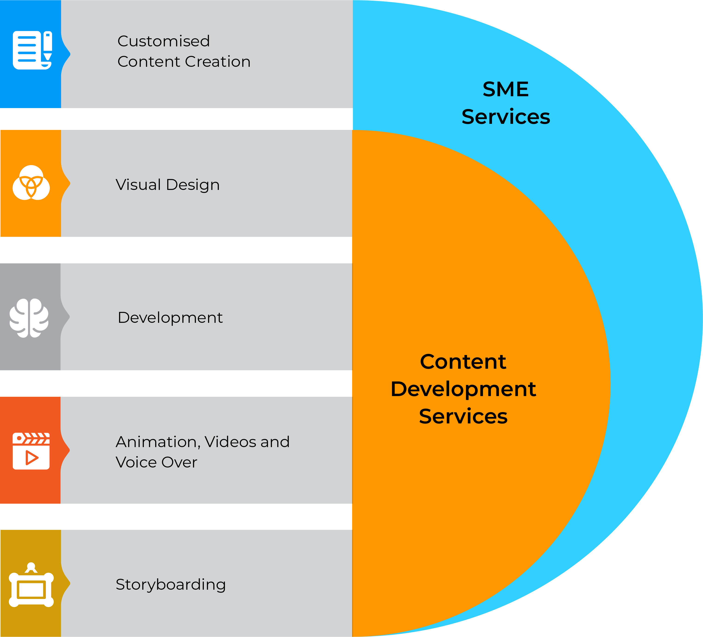

Digital learning
E-learning has gained enormous demand in the current pandemic situations. In this era when home has become offices, classrooms are also replaced by virtual learning. This has lots of benefit not just to employees but also the companies.
CIEL has been a part of creating relevant digital content for the LMS of many corporates over the last few years and we have noted that E-Learning helps to educate the geographically diverse workforce with a standardised module and it also works out to be cost effective.
E-learning benefits your organization in following ways:
Content Ethos @CIEL
Focus on conceptual clarity, relevance, rigour and practical application.
Knowledge addressing identified compentencies
Functional competency mapping exercises to create content/programmes for specific roles and functions.
Robust testing - against a defined set of learning objectives
Blending selling skills and technical knowledge
End to End Delivery
CIEL’s content curation services seek to power Client LMS with self-paced learning SCORM content across multiple levels of interactivity. CIEL works closely with the clients to create content using its content ethos and subject matter expertise or could also work with existing client content to develop into self-paced e-learning modules.
{kind=link}
CIEL Credentials
At CIEL, we work extensively and closely with Working Professionals from the Industry with specific Subject Area Expertise across BFSI topics.
CIEL has created around 100+ long duration e-courses, 120+ micro learning modules and 650+ videos/podcasts across clients and subject areas:
Highlights of CIEL Courses
SCORM-based Learning Projects
CIEL’s SCORM based learning modules seek to boost and retain the concepts among the learner, while enabling appropriate tracking and testing, aligned to your LMS and SCORM guidelines.
|
|
|
|
|
|
Gamification: Use the game format to administer quizzes and assessments in order to foster learner engagement and retain learner enthusiasm. Click here to view demo |
{kind=link}
Annual Maintenance
CIEL will undertake annual updation of data, regulatory updates to ensure that the content stays relevant and useful over a longer period of time for your learners.
About CIEL
CIEL has been in the financial education space for over a decade & is one of the largest learning solutions providers in BFSI sector, India. It is focused on Executive Education, Employability, Entrepreneurship & Financial Awareness. Our experience of working with over 100 BFSI companies & training over 300,000 learners gives us a fair understanding of BFSI learning domain.
We have a trainer network of more than 600 consultant trainers across Functional, Behavioral & Selling Skills. Most of our trainers are practitioners with overall average experience of over 20 years.
Some Of Our Happy Clients:
{kind=link}
Our Team of Subject Matter Experts
Uma Shashikant has been a trainer, researcher and consultant in the capital markets since 1988. She taught at the Indian Institute of Capital Markets, was Vice President, Knowledge Management at ICICI Prudential AMC and Chief R&D Officer at Optimix Technologies before setting up CIEL. Uma holds a Doctoral degree in Finance.
Arti Bhargava has an overall experience of 17 years, having spent the last 12 years with CIEL and heads the Content and Production functions/business vertical. She is an MBA in Finance and has worked as a part of the Product Research and Communication with ICICI Prudential AMC in her last stint.
Anju Vyapak works on insurance content development in CIEL. She is a General Insurance professional with over 20 years of hands-on work & teaching experience. She is a guest faculty (Insurance) for management students at Welingkar Institute of Management and to industry professionals at College of Insurance, Insurance Institute of India. She is a qualified company secretary (ACS) and Fellow of Insurance Institute of India (FIII)
Labdhi Mehta works on content development in CIEL. She is an engineer and holds a masters degree in management. She has worked in products and wealth management areas in HDFC Bank and DSP Merrill Lynch.
Bincy D’Cruz works on content development in CIEL. Armed with an MBA in financial markets and with over 13 years of experience in Equity market. She has worked with ICICI Securities providing investment solutions to clients and then moved towards Training across verticals.
Avinash Tulsiani works on content development and diagnostic assessments in CIEL. Armed with a Master’s in Corporate Finance and internships across multiple sectors in the finance industry.
Raj Mhatre has an overall experience of 10 years in Graphic Designing & eLearning Development. He handles the production part of the content. He has a vast knowledge of different authoring tools and Learning Management Systems used in eLearning.